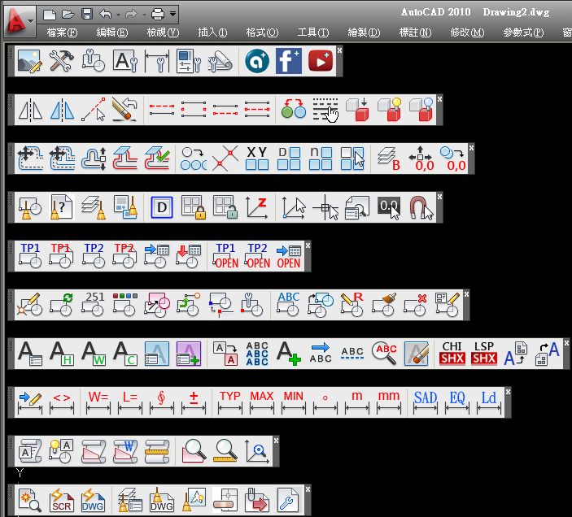

👇影片展示：1:05 主程式下載安裝步驟
https://www.youtube.com/watch?v=arvN3M-1Z4k&t=65s
AutoCAD顧問論壇外掛程式 安裝說明及升級更新
0:00 片頭展示
0:30 安裝路徑偵測步驟
1:05 主程式下載安裝步驟
2:09 新增外掛工作區
3:48 外掛轉移授權步驟
5:30 外掛升級更新下載
6:46 PDF出圖新功能展示
※說明：
1. AutoCAD顧問 - ACADAdviser外掛程式，只能安裝授權在一部電腦中，但是可安裝同一部電腦中的其他AutoCAD版本。
2. 目前可支援AutoCAD 2000~2024版本（Windows作業系統），使用者可以選擇常用的AutoCAD版本進行「安裝路徑偵測步驟」。
3.用戶執行 ACADAdviser外掛程式 - 安裝路徑偵測步驟 完畢後，接著可以「安裝主程式」到用戶的電腦。
載入ACADAdviser外掛程式成功後，畫面顯示「AutoCAD顧問外掛程式 」所有工具列。
下圖工具按鈕使用大按鈕（32x32解析度）。

相關主題文章：